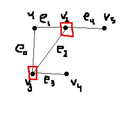
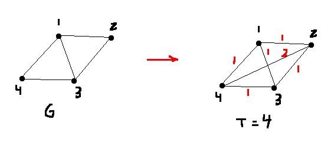

Cycle: \(G\) is an undirected graph. Does \(G\) contain a cycle?
Hamiltonian cycle: \(G\) is an undirected graph. Does \(G\) contain a cycle that passes through every vertex in \(V(G)\) exactly once?
0-1 Knapsack Decision: Given a list of profits \(P\), a list of weights \(W\), a capacity \(M\) and a target profit \(T\), is there an \(n\)-tuple \([x_1,x_2,...,x_n] \in \{0,1\}^n\) such that \(\sum w_ix_i \le M\) and \(\sum p_ix_i \ge T\)?
Rational Knapsack Decision: Given a list of profits \(P\), a list of weights \(W\), a capacity \(M\) and a target profit \(T\), is there an \(n\)-tuple \([x_1,x_2,...,x_n] \in [0,1]^n\) such that \(\sum w_ix_i \le M\) and \(\sum p_ix_i \ge T\)?
Suppose \(\Pi_1\) and \(\Pi_2\) are problems (not necessarily decision problems.) A hypothetical algorithm of \(A_2\) to solve \(\Pi_2\) is called an oracle for \(\Pi_2\).
Suppose \(A_1\) is an algorithm that solves \(\Pi_1\), assuming an existence of an oracle \(A_2\) for \(\Pi_2\). Then we say that \(A_1\) is a Turing reduction from \(\Pi_1\) to \(\Pi_2\), denoted:
\[\Pi_1 \le^T \Pi_2\]
A turing reduction \(A\) is a polynomial time Turing reduction if the running time for \(A\) is polynomial under the assumption that the oracle \(A_2\) has unit cost running time.
If there is a polynomial time Turing reduction from \(\Pi_1\) to \(\Pi_2\), we write:
\[\Pi_1 \le^T_P \Pi_2\]
The complecity of a reduction takes into account:
TSP-Optimization: Given a graph \(G\) and edge weights \(w : E \rightarrow \mathbb{Z}^+\), find a Hamiltonian cycle \(H\) in \(G\) such that \(w(H) = \sum_{e \in H}w(e)\) is minimized
TSP-Optimal Value: Given a graph \(G\) and edge weights \(w : E \rightarrow \mathbb{Z}^+\), find the minimum \(T\) such that there exists a Hamiltonian cycle \(H\) in \(G\) with \(w(H)=T\).
TSP-Decision: Given a graph \(G\) and edge weights \(w : E \rightarrow \mathbb{Z}^+\) and a target \(T\), does there exist a Hamiltonian cycle \(H\) in \(G\) with \(w(H) \le T\)?
TSP optimal value \(\le^T_P\) TSP decision. This can be done using binary search: use the oracle to see if it's possible to reach a target halfway through the search space. Depending on the response, we can then cut the search space in half by 2.
This means we need to have upper and lower bounds computed to start with.
Let \(A\) be a polynomial-time algorithm to solve \(\Pi \in P\). Define a certificate verification algorithm \(Ver\) for \(\Pi\):
Ver(I,C):
run A(I) (ignore C)For a decision problem \(\Pi\), let \(I(\Pi)\) denote the set of all instances of \(\Pi\). Let \(I_{yes}\Pi\) and \(I_{no}\Pi\) be all the yes- and no-instances.
Let \(\Pi_1, \Pi_2\) be decision problems. Transformation from \(\Pi_1\) to \(\Pi_2\) exists if there exists a function \(f : I(\Pi_1) \rightarrow I(\Pi_2)\) such that:
Properties
NPC denotes the set of all decision problems \(\Pi\) that satisfy:
If \(P \cup NPC \ne \emptyset\), then \(P = NP\).
Let \(I\) be the instance of 3-CNF-SAT consisting of \(n\) variables, \(x_1, ..., x_n\) and \(m\) clauses \(C_1, ..., C_n\). Let \(C_i = {z_1^i, z_2^i, z_3^i}\), \(1 \le i \le m\).
Define \(f(I) = (G,k), G=(V,E)\), where:
e.g.
\(C_1 = \{x_1, \bar{x_2}, \bar{x_3}\}\)
\(C_2 = \{\bar{x_1}, x_2, x_3\}\)
\(C_3 = \{x_1, x_2, \bar{x_3}\}\)
We use this to create a clique by taking the non-edges (complementing the graph). There is a triangle on each level. Connect two vertices if the corresponding literals are negations of each other.
\(x_1 = T, x_2 = T, x_3 = F\). Choose a true literal from each clause, and take the corresponding vertices in the graph. There are \(m\) different levels, so no two of these literals are negatives of each other. This means that there are no edges in the complementary graph, which forms a clique in the real graph. Therefore yes in 3-CNF-SAT maps to yes in Clique.
In the reverse direction, suppose \(f(I)\) is a yes instance. We will prove that \(I\) is a yes instance.
Subset sum: Given a list of sizes \(S=[s_1, ..., s_n]\) and a target sum \(T\), does there exist a subset of these sizes \(J \subseteq \{1,...,n\} \mid \sum_{i \in J} s_i = T\)?
Suppose \(I = (G,k)\) where \(G=(V,E), |V|=n, |E|=m\) and \(1 \le k \le n\). Suppose \(V=\{v_1,...,v_n\}\) and \(E=\{e_0,...,e_{m-1}\). For \(1 \le i \le n, 0 \le j \le m-1\), let:
\[c_{ij}=\begin{cases}
1, &e_j \text{ is incident with } v_i\\
0, &\text{otherwise}
\end{cases}\]
Define \(n+m\) sizes and a target sum \(W\) as follows:
\[\begin{align*}
a_i &= 10^m + \sum_{j=10}^{m-1}{c_{ij} 10^j}, &1 \le i \le n\\
b_j &= 10^j, &0 \le j \le m-1\\
W &= k \cdot 10^m + \sum_{j=0}^{m-1}{2\cdot 10^j}
\end{align*}\]
Then define \(f(I)=(a_1, ..., a_n, b_0, ..., b_{m-1}, W)\).
e.g.
Start with a vertex cover and \(k=2\).

We then can make the subset sum:
W = k 2 2 2 2 2
e4 e3 e2 e1 e0
v1: 1 0 0 0 1 1 = a1
v2: 1 1 0 1 1 0 = a2
v3: 1 0 1 1 0 1 = a3
v4: 1 0 1 0 0 0 = a4
v5: 1 1 0 0 0 0 = a5
1 = b0
1 0 = b1
1 0 0 = b2
1 0 0 0 = b3
1 0 0 0 0 = b4
W = 2 2 2 2 2 2
a2 = 1 1 0 1 1 0
a3 = 1 0 1 1 0 1
+ ___________
2 1 1 2 1 1 (a2 + a3)
b0 = 1 (choose these b values)
b1 = 1 0
b3 = 1 0 0 0
b4 = 1 0 0 0 0
+ ___________
2 2 2 2 2 2In general, we have \(k\) vertices in a vertex cover.
Suppose we have a subset of the \(a_i\)s and \(b_j\)s whose sum is \(k222...2\). We need to show that \(G\) has a vertex cover of size \(k\). Because each \(a_i\) starts with a 1, exactly \(k\) of the \(a_i\)s must have been chosen in order to get a \(k\) in the first column. Then, consider the corresponding vertices in the graph.
The instance of subset sum is represented with sizes \(s_1, ..., s_n\) and target size \(T\). In 0-1 Knapsack, use the sizes as both the item weights and profits, and \(T\) as both the knapsack capacity and target profit.
We now know that \(\sum x_i s_i \le T\) for the weights, and \(\sum x_i s_i \ge T\) for the profits.
Suppose \(sum_{i \in J} s_i = T\).
Define \(X_i = 1\) if \(i \in J\) and \(X_i = 0\) otherwise.
Then, \(\sum x_i s_i = T\), so \(\sum x_i s_i \le T\) for the weights, and \(\sum x_i s_i \ge T\) for the profits.
In the other direction:
\(\sum x_i s_i \le T\) for the weights, and \(\sum x_i s_i \ge T\) for the profits. So, \(\sum x_i s_i = T\).
Define \(J = \{i : x_i = 1\}\). Then, \(\sum_{i \in J} s_i = T\).
A Hamiltonian cycle instance has a graph \(G\) with \(n\) vertices. For TSP-Dec, use the complete graph on the same \(n\) vertices (Every pair is now joined by an edge.) Then, define:
\[w(uv) = \begin{cases}
1, & uv \in E\\
2, & uv \notin E
\end{cases}\]
Our target path length \(T\) will be defined as \(n\).
